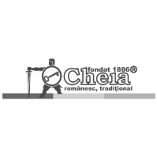
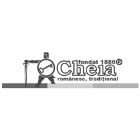

Utilizari ale buretiilor lufa
Bureții Lufa înlocuiesc cu multă ușurință bureții din plastic. Se folosesc ca fiind varianta naturală a bureților clasici, reușind să ofere cele mai bune rezultate atât în bucătărie, cât și în baie. Mai ales atunci când sunt culeși mai târziu se usuc
Bureții Lufa înseamnă sănătate, aer proaspăt, munca câmpului. Nu ezita să participi și tu la atelierele organizate de Prodnat pentru a vedea cât de simplu este totul.
 Bureții Lufa se folosesc pentru bucătărie, înlocuind bureții clasici, din plastic.
Bureții Lufa se folosesc pentru bucătărie, înlocuind bureții clasici, din plastic.
Bureții Lufa pot fi utilizați în baie, îndepărtând pielea aspră, astfel că sunt cât se poate de prietenoși în ritualul de îngrijire.
Bureții Lufa sunt folosiți drept aliment, prezenți în salate, cu condiția să fie culeși la maxim 12 cm.
Bureții Lufa pot fi decorativi, cu puțină imaginație vei reuși să transformi totul în ceva diferit.
Bureții Lufa protejează mediul, natura, înlocuind cu ușurință plasticul! Sunt naturali 100%.
 
